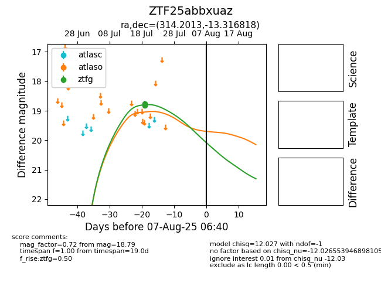

Target ZTF25abbxuaz at 2025-08-07 07:30, see:
FINK: fink-portal.org/ZTF25abbxuaz
Lasair: lasair-ztf.lsst.ac.uk/objects/ZTF25abbxuaz
ALeRCE: alerce.online/object/ZTF25abbxuaz
alt names
ZTF25abbxuaz (ztf,fink)
coordinates:
equatorial (ra, dec) = (314.2013,-13.31682)
galactic (l, b) = (34.7102,-33.74532)
photometry
last atlaso=16.93, ztfg=18.79
1 atlaso, 3 ztfg detections
